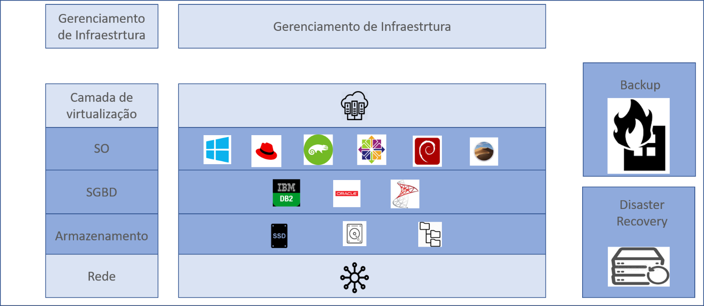
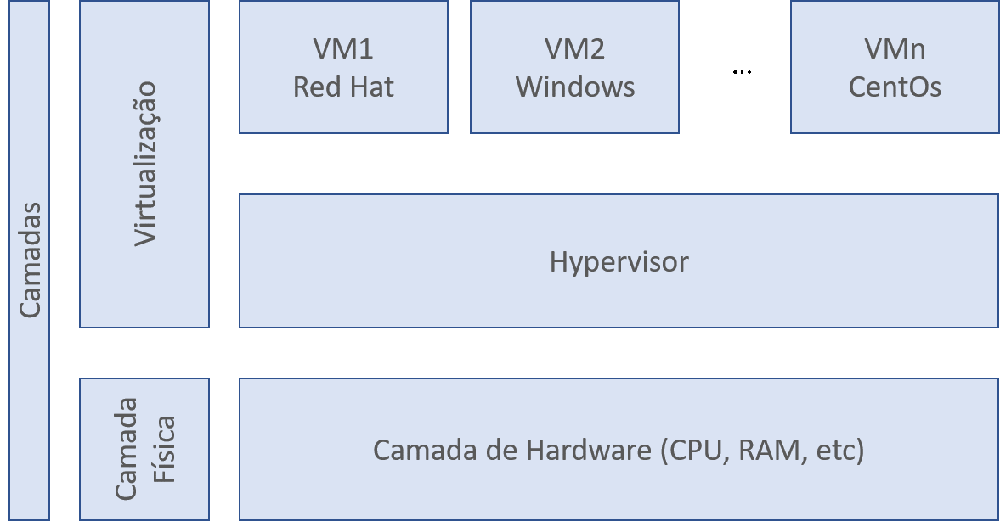
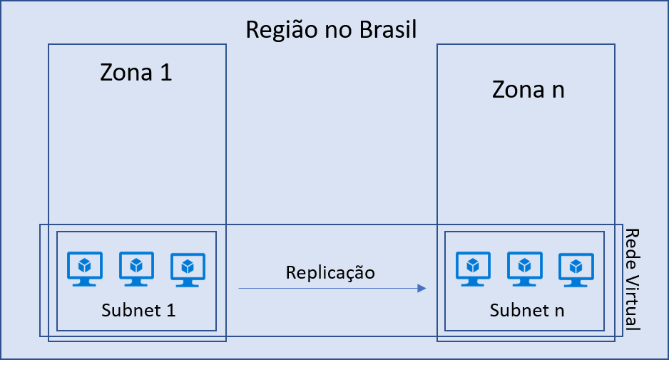
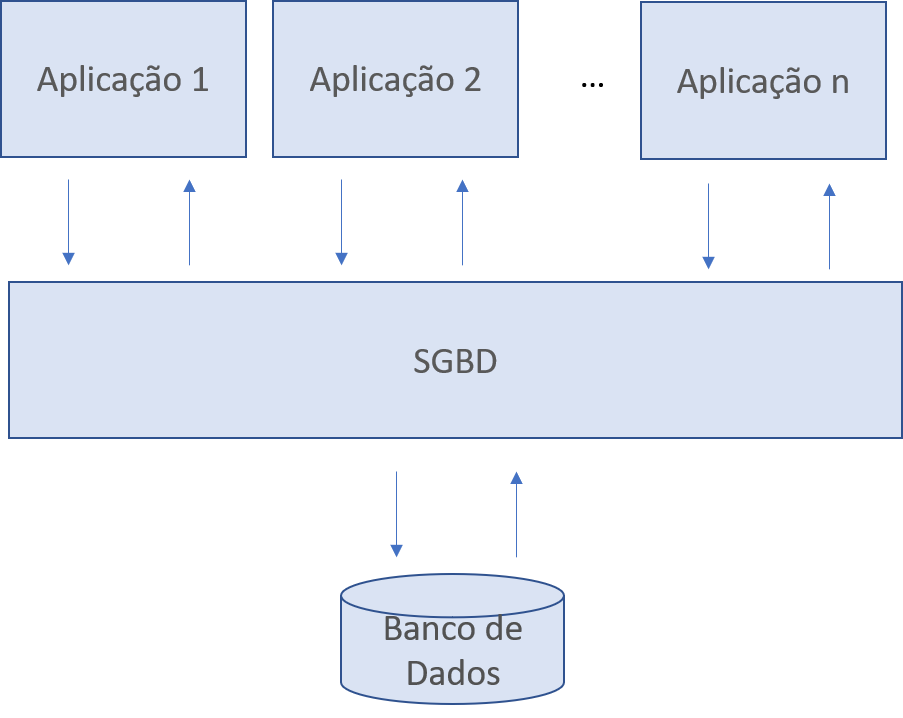
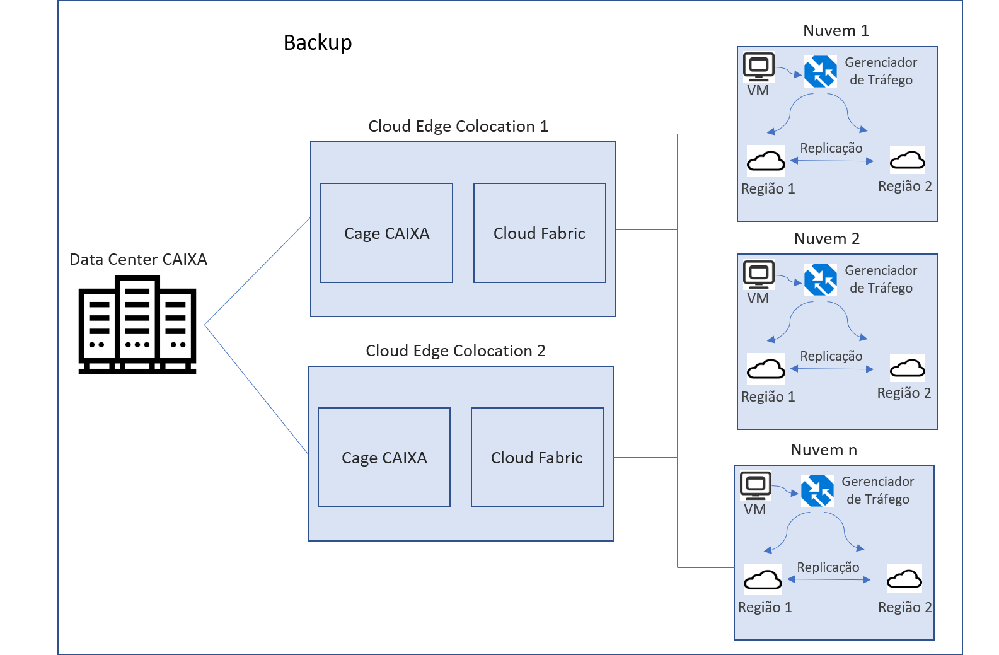
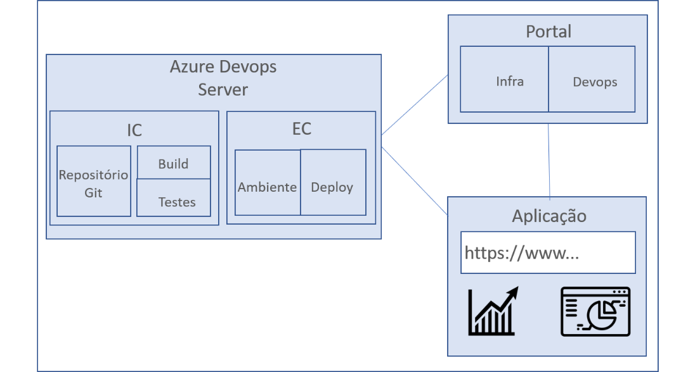
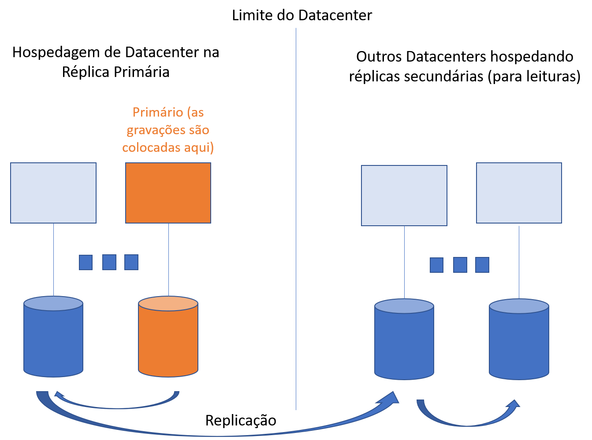
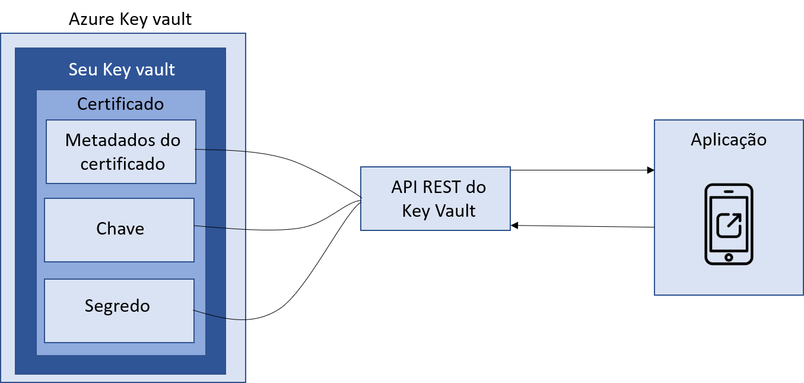
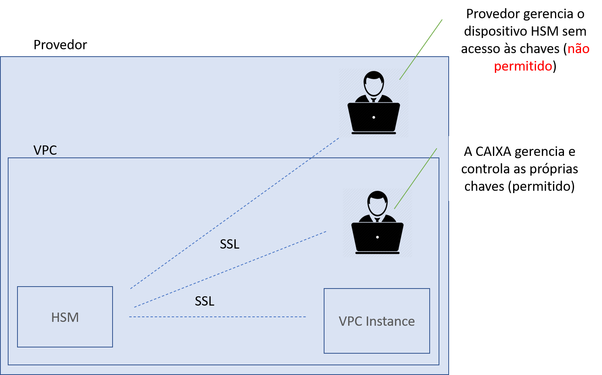

Infraestrutura de Nuvem
O objetivo deste documento é definir a arquitetura referência de infraestrutura para nuvem utilizada na CAIXA, bem como, padrões e tecnologias a serem utilizados. O documento também deve servir como um guia para direcionar a tomada de decisões sobre quando utilizar cada arquétipo arquitetural e avaliar a viabilidade de novos componentes conforme as estratégias de negócios e premissas estabelecidas pela área responsável - SUART.

Arquitetura de Processador
-
A CAIXA utiliza a arquitetura X86 no ambiente on-premises, motivo pelo qual será replicada a mesma estratégia para nuvem.
-
A manutenção em nuvem da arquitetura utilizado no ambiente on-premisses facilita a migração sem a necessidade de reescrita da aplicação. Sendo necessário apenas as adaptações para o adequado funcionamento em nuvem.
-
Com isso, para reduzir a possibilidade de lock-in com a impossibilidade de migração de aplicações para o ambiente on-premises não será permitida a utilização da arquitetura ARM.
-
No ambiente em nuvem será possível a utilização de processadores tanto do fabricante Intel quanto da AMD
-
Modelos de máquinas disponíveis em Nuvem
-
Para padronizar as aplicações, funções e políticas de uso, haverá blueprints habilitados com os seguintes modelos de máquinas em nuvem:
- Máquina virtual com 2vCPU e 4GB de memória RAM
- Máquina virtual com 2vCPU e 8GB de memória RAM
- Máquina virtual com 4vCPU e 8GB de memória RAM
- Máquina virtual com 4vCPU e 16GB de memória RAM
- Máquina virtual com 4vCPU e 32GB de memória RAM
- Máquina virtual com 8vCPU e 16GB de memória RAM
- Máquina virtual com 8vCPU e 32GB de memória RAM
- Máquina virtual com 16vCPU e 32GB de memória RAM
-
- Máquina virtual com 16vCPU e 64GB de memória RAM
-
- Máquina virtual com 32vCPU e 128GB de memória RAM
-
- Máquina virtual com 64vCPU e 512GB de memória RAM
- Máquinas especiais apenas poderão ser utilizadas em caso de aprovação da SUART na reunião de arquitetura inicial.
Visão de Arquitetura

Redundância de máquinas virtuais (local, zona, global)
- O pool de máquinas virtuais deve possuir alta disponibilidade para os workloads em nuvem, para isso deverão ser criadas dentro de um mesmo dimensionamento duas ou mais VMs.
- A redundância pode ser dentro de uma mesma zona de disponibilidade, em zonas de disponibilidade distintas, dentro de uma mesma região ou em regiões de disponibilidade distintas dentro do Brasil.
-
A definição dos locais de implantação ocorrerá na reunião inicial de arquitetura de cada aplicação a ser migrada/criada em nuvem.
- Por padrão a redundância será pelo menos dentro de uma mesma zona de disponibilidade.

-
Sistema Operacional
- As máquinas virtuais poderão ser criadas com sistema operacional Windows, Linux e MacOs nas seguintes distribuições e versões:
- Linux CentOS 7 ou superior;
- Linux Debian 8 ou superior;
- Linux Red Hat Enterprise 7 ou superior;
- Linux Suse 11 ou superior;
- Microsoft Windows Server 2012 ou superior;
- MacOS Mojave 10.14 ou superior.
- É desejável que as máquinas virtuais contenham a capacidade de crescimento automático em função da demanda (autoscaling).
- A utilização do recurso de autoscaling será decidida na reunião inicial de arquitetura.
- A utilização de licenças do ambiente on premises em nuvem (byol) será definida na reunião inicial de arquitetura.
- A utilização de byol será permitida apenas em casos excepcionais a depender da previsibilidade de uso em contrato para evitar o pagamento de multas oriundas do uso em ambiente diverso daquele previamente contratado.
- A definição do sistema operacional utilizado ocorrerá na reunião inicial de arquitetura de cada aplicação a ser migrada/criada em nuvem.
- O sistema operacional padrão é o Linux RedHat Enterprise.
- A equipe de referência para o tema é a SUART05 – Infraestrutura.
Desktop em nuvem (em breve)
- SO
- Banco
- Conexão de redes
- Configuração da máquina
Banco de Dados
-
A definição sobre a escolha dos SGBDs será feita na reunião inicial de arquitetura.
-
Poderão ser utilizados os seguintes SGBDs:
-
SQL Server, Oracle, DB2 ou Redis.
-
A SUART13 – Arquitetura de Dados é a equipe responsável pela definição do SGBDs a ser utilizado.
-
-
Os serviços de banco de dados devem:
-
Permitir a criação de banco de dados gerenciado (PaaS), seguindo o modelo de responsabilidade de serviços em nuvem na impossibilidade de utilização dos modelos IaaS;
-
Permitir a escolha do tipo de disco que suportará o banco de dados ou oferecer o melhor disco disponível baseado no requisito da aplicação;
-
Implementar recursos de segurança relacionados ao controle de acesso;
-
Implementar recursos de detecção de falhas e recuperação dos recursos computacionais e aplicações;
-
Permitir o monitoramento do banco de dados.
-
Ter a capacidade de configurar recurso de alta disponibilidade.
-
Permitir atribuir o tipo de recurso computacional que suportará o banco de dados;
-
Oferecer serviço de log de autenticação;
-
Ter possibilidade de registrar modificações DML, DDL e DCL
-
Os sistemas de gerenciamento de banco de dados devem estar devidamente licenciados (edição Standard ou superior) e aptos para uso.
-
Os SGBDs deverão possuir no mínimo as seguintes características:
-
Padrão SQL 2016;
-
Capacidade para atendimento à GDPR;
-
Capacidade para atendimento à LGPD;
-
Drivers ODBC versão 4 para windows 10 e superior;
-
Drivers JDBC tipo 4 para Java 8 e superior;
-
OLTP (online transaction processing);
-
-
A SUART13 definirá as ferramentas de monitoramento a serem utilizadas em nuvem para cada aplicação.

-
Armazenamento
- A SUART05 - Infraestrutura Tecnológica é a equipe responsável pela definição do armazenamento a ser utilizado.
- Poderão ser utilizados os seguintes padrões de armazenamento:
- Serviço de armazenamento de blocos (SSD - SATA) com as seguintes características:
- Os volumes deverão possibilitar anexar o volume criado às máquinas virtuais e reconhecido pelo SO como um dispositivo físico e local.
- O serviço deverá permitir a definição de nomes ou identificadores (ID’s) de volumes de armazenamento.
- Os volumes deverão oferecer capacidade de snapshots duráveis que podem ser usados em conjunto com o serviço de backup em nuvem.
- Deverão possuir função de criptografia do volume com mudança de chave gerenciada pelo próprio provedor ou pela CAIXA.
- Serviço de armazenamento de blocos (SSD - NVME)
- Deverá possibilitar que o volume criado seja anexado às máquinas virtuais e reconhecido pelo SO como um dispositivo físico e local.
- O serviço deverá permitir a definição de nomes ou identificadores (ID’s) de volumes de armazenamento.
- Os volumes deverão oferecer capacidade de snapshots duráveis que podem ser usados em conjunto com o serviço de backup em nuvem.
- Deverá possuir função de criptografia do volume com mudança de chave gerenciada pelo próprio provedor ou pela CAIXA.
- Serviço de Armazenamento de Objetos
- Apenas serão aceitos serviços para utilização de volume de armazenamento de objetos que possuam aos seguintes requisitos;
- Recurso de versionamento;
- Interface web para inclusão, exclusão e consultas de informações;
- Função de criptografia do volume com mudança de chave gerenciada pelo PROVEDOR ou pela CAIXA;
- API para upload de arquivos via aplicações desenvolvidas por terceiros.
- Apenas serão aceitos serviços para utilização de volume de armazenamento de objetos que possuam aos seguintes requisitos;
- Serviço de armazenamento de Filesystem
- Deverá ser possível o acesso para compartilhamento de arquivos, utilizando no mínimo os protocolos: CIFS, SMBV2 e NFSV3.
- A utilização de archive, blob ou outras estratégias de armazenamentos não previamente elencados nesse capítulo deverão ser aprovados pela SUART05 na reunião inicial de arquitetura.
- Serviço de armazenamento de blocos (SSD - SATA) com as seguintes características:
Backup
-
Será realizado o backup de todas as aplicações, dados e scripts de configuração que estiverem disponíveis em nuvem, o que inclui as imagens das máquinas virtuais importadas previamente para o provedor de nuvem, cópias dos dados armazenados em dispositivos de armazenamento em nuvem e cópias dos bancos de dados que fazem parte da arquitetura das aplicações da CAIXA provisionadas em nuvem.
-
As imagens das máquinas para backup e importação para o ambiente on-premises são aquelas que foram previamente migradas do seu ambiente on-premises para o ambiente de nuvem.
-
A forma de backup de cada aplicação será definida na reunião inicial de arquitetura.
-
Em conformidade com a IN5 GSI/PR, apenas poderá ocorrer backup em região diversa, caso essa esteja também em território nacional.
-
Caso as aplicações não possuam informações sensíveis e o provedor não possua mais de uma região em território brasileiro, o backup poderá acontecer dentro da mesma região conforme preconiza a IN5 GSI/PR.
-
As aplicações que possuam informações sensíveis não poderão possuir backup em nuvem.
-
-
O Link dedicado entre os datacenters da CAIXA e entre os provedores de nuvem poderá ser um túnel expresso ou link do tipo VPN, baseado na definição da SUART07 – Rede de Telecomunicações.
-
Arquitetura de referência.

Devops
-
O objetivo do Devops é servir de apoio técnico na automação de entregas de versão de aplicações em todos os ambientes.
-
A arquitetura de Devops se destina às equipes de desenvolvimento e operações. A GECEQ é a unidade responsável por definir a prioridade de cada solicitação de automação Devops. Ela define a prioridade, a equipe da coordenação do sistema e os técnicos envolvidos.
-
Os sistemas elencados pela GECEQ terão a implantação da Integração e das entregas contínuas. Sendo migrados os ecossistemas das soluções para a esteira corporativa de DEVOPs.
-
Premissas da Esteira DEVOPs CAIXA
-
Identificar as necessidades
-
Repositório DEVE ser GIT, preferencialmente fontes.caixa.
-
Cada REPO DEVE ter contemplar apenas 1(uma) Build Pipeline Ex.: frontend, backend em REPO separados.
-
DEVE ter repositório dedicado para itens de configuração.
-
Confirmar se as dependências em suas respectivas versões estão disponíveis no Nexus (binarios.caixa).
-
Mapear as configurações e as variáveis de ambiente para configurações por dos diversos ambientes (DES|TQS|HMP|PRD).
-
Mapeamento das portas e conexões que fazem parte do ecossistema da aplicação.
-
O sistema DEVE ter pelo menos 1(um) build no Nexus (binarios.caixa).
-
Criar Grupos de AD para devidos permissionamentos nos perfis dos times que atuarão no ADS.
-
DEVE-se ter o nome da comunidade ao qual o aplicativo está vinculado para futura criação de grupos e times.
-
Identificar os parâmetros mínimos necessários para aprovação no Quality Gate do SonarQube.
-
Ter domínio do DAS ou qualquer documento que represente a arquitetura a da aplicação/sistema.
-
OBS.:A equipe do SAI pode ser acionado para ajustar as necessidades identificadas.
-
-
Mapear atividades para as configurações nas pipelines no perfil de desenvolvedor
-
Configurações dos repositórios de fontes
- Adicionar as configurações de SSL para utilização do git
-
Realizar o clone e respectivamente o push, caso o repositório não tenha sido previamente migrado;
-
Quando necessário, separar os repositórios por unidades de empacotamento necessárias, por exemplo, frontend e backend;
-
Entrar no gerenciamento de repositórios, acessar o repositório, definir a branch default (Set as default branch);
-
Havendo mais de um repositório de fontes, realizar o procedimento;
-
Usar como referência o repositório de sample-* da respectiva linguagem;
-
Crie a pasta. s2i/bin e crie os arquivos "run", "assemble". Você pode encontrar os modelos dos arquivos no repositório "Sample-Node" (Wiki)
-
Abra o arquivo "run" e verifique se ele está apontando para o "app.js" corretamente (Wiki).
-
Ajustes nos arquivos de configuração conforme respectivas tecnologias;
-
Ajustar ENVIRONMENTS (Variables Group) nos demais arquivos de configurações conforme linguagens para o processo de build, esta atividade apoia e é apoiada pela atividade 1.5. (SAI);
-
Angular e node: environments/*
-
Java: jmx_prometheus.yaml
-
-
Configurações da Build Pipeline
-
Identificar a Build Pipeline criada pelo SAI.
-
Testar Build Pipeline para validar o processo de configuração.
-
Fazer agendamento (queue) da build.
-
Validar a execução da build, até sua finalização gerando pacote publicável
-
Caso de insucesso, realizar os ajustes necessários e repetir o processo.
-
Caso de sucesso, o pacote é gerado no NEXUS, com todas as tarefas executadas, incluindo as de garantia da qualidade;
-
-
Ajustes nos repositórios de configurações
-
Identificar o repositório de configurações criado pelo SAI.
-
Ajustar ENVIRONMENTS (Variables Group) nos demais arquivos de configurações conforme linguagens para o processo de release, esta atividade apoia e é apoiada pela atividade 1.5. (SAI).
-
Angular: sample-nginx.conf.
-
Java: standalone.conf.
-
-
Incluir ou configurar os Variable Groups.
-
Solicitar ao SAI a clonagem e edição dos variables group conforme a linguagem e stages.
-
Incluir e/ou validar as variáveis.
-
-
Solicitações das liberações de portas e firewall no portal.infra.
- OBS.: Caso haja a necessidade de novos tipos de repositórios, deve-se ratificar com a GECEQ04

-
Catálogo de ferramentas
Automação e Teste
Katalon;
R. Dev. Teste for Z System;
R. Funcional Testes;
Cucumber;
C. Based T. Automation;
JMock;
TestNG;
Hiperstation;
Selenium;
JUnit;
Appium;
Capybara;
Livre;
Geração de Massa
File-Aid;
Livre;
Teste não funcional
Azure;
R. Performance Tester;
R. Test Workbench;
Qa-load;
JMeter;
Análise de Código
CA Introscope;
Livre;
PMD;
Abend-Aid;
Quality control for Cobol;
Xpediter;
Quality Control for DB2;
Sonarlint;
Sonar;
Teste de API
Postman;
SoapUI;
Gestão de Teste
R. Quality Manager;
TesteLink;
Mantis;
Disaster Recovery
-
Em conformidade com a IN 05 GSI/PR o Disaster recovery deverá acontecer necessariamente em território nacional.
- Preferencialmente, o disaster recovery (DR) deverá ocorrer em outra região no Brasil, e na inexistência de outra região, o DR deverá ocorrer na zona de disponibilidade mais distante habilitada no país.
- Cada zona de disponibilidade deve possuir um ou mais datacenters com energia, resfriamento e rede independentes.
- O DR deverá ser na modalidade sob demanda, utilizando-se apenas o volume necessário para o armazenamento e futuro reestabelecimento do serviço.
- Deverá ser utilizada a solução do cloud provider para replicação e recuperação de VMs da região secundária como o CloudEndure da AWS ou o Azure Site Recovery.

- Preferencialmente, o disaster recovery (DR) deverá ocorrer em outra região no Brasil, e na inexistência de outra região, o DR deverá ocorrer na zona de disponibilidade mais distante habilitada no país.
Arquitetura de Segurança
- A equipe de referência para o assunto é a SUART08 e as informações adicionais podem ser obtidas no link: http://arquiteturati.caixa/arquitetura_referencia/seguranca/chave_criptografia/
Gestão De Identidade E Controle De Acessos
- Todas as contas de usuário devem ser identificadas por um ID de usuário exclusivo e todas as ações de um ID de usuário devem ser associadas a um único indivíduo ou proprietário registrado.
- As contas do usuário devem ser criadas e configuradas pelo administrador de segurança do usuário.
- Uma conta não pessoal deve ser atribuída exclusivamente a uma única aplicação ou serviço e não pode ser utilizada para qualquer outra finalidade além daquela para a qual ela foi criada.
- O Provedor deve informar os logins de usuário e senhas iniciais por meio de canais separados.
- O acesso aos recursos da CAIXA deverá ser realizado em tenant designado especificamente, sem que estes recursos sejam compartilhados com qualquer outra entidade, bem como a camada de dados da aplicação não pode ser compartilhada com outros clientes da prestadora de serviços.
Active Directory do Azure
- O Azure AD permite a criação e gerenciamento de usuários e grupos e habilitar as permissões para permitir ou negar acesso aos recursos da empresa.
- A maneira mais comum para criar um sistema rico em dados, acessível e utilizável, é através de blocos de construção independentes ou unidades de escala (partições).
- Uma gravação dos dados é confirmada em pelo menos dois datacenters em território nacional, antes de ser reconhecida. Isso acontece primeiro por meio da confirmação da gravação no primário e, em seguida, replicando imediatamente para pelo menos outro datacenter. Essa ação de gravação garante que uma possível perda catastrófica do datacenter que hospeda o primário não resulte em perda de dados.

Azure Key Vault
- Serviço de Nuvem para armazenar e acessar segredos de forma segura.
-
Os segredos podem ser APIs, senhas, certificados, chaves criptográficas.
- Gerenciamento de segredos – O Azure Key Vault pode ser usado para armazenar com segurança e controlar o acesso a tokens, senhas, certificados, chaves de API e outros segredos.
- Gerenciamento de chaves – O Azure Key Vault pode ser usado como uma solução de gerenciamento de chaves. O Azure Key Vault torna fácil criar e controlar as chaves de criptografia usadas para criptografar seus dados.
- Gerenciamento de certificado – O Azure Key Vault permite provisionar, gerenciar e implantar com facilidade certificados de protocolo TLS/SSL públicos e privados para uso com Azure e seus recursos internos conectados.

-
HSM
- O Módulo de segurança de Hardware (HSM) deve permitir a exportação das chaves e ser compatível com os outros HSMs disponíveis no mercado.
- O HSM deve permitir a automatização de tarefas administrativas, como provisionamento de hardware, aplicação de patches de software, alta disponibilidade e backups.
